Bibliography
- All (58)
- Reports & official documents (10)
- Research papers & books (9)
- NEC & industry material (20)
- News & press (19)
-
“Bedroq Seek: Next generation video analytics.” Bedroq, www.bedroq.co.uk/
services/ bedroq-seek/ . Accessed 9 Nov. 2026. 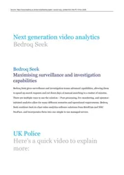
-
“Behavior Analyzer (Video Analytics).” NEC, www.nec.com/
en/ global/ solutions/ safety/ critical_infra/ behavioranalyzer.html. -
Big Brother Watch Team. “Big Brother Watch sign letter calling for the scrapping of facial recognition at Notting Hill Carnival.” Big Brother Watch, 16 Aug. 2017, bigbrotherwatch.org.uk/
blog/ joint-letter-to-the-commissioner-of-the-metropolitan-police/ . -
Bowyer, Kevin W. “Face recognition technology: security versus privacy.” IEEE Technology and Society Magazine, vol. 23, no. 1, 2004, pp. 9-19, https:/
/ doi.org/ 10.1109/ MTAS.2004.1273467. 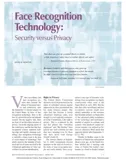
-
Brewer, Kirstie. “Police at Notting Hill carnival: ‘It’s difficult not to want to dance, we’re only human.’” The Guardian, 26 Aug. 2016, www.theguardian.com/
public-leaders-network/ 2016/ aug/ 26/ police-at-notting-hill-carnival-its-difficult-not-to-want-to-dance-were-only-human. -
“British authorities use new technology to increase state surveillance.” World Socialist Web Site, 28 Oct. 1998, www.wsws.org/
en/ articles/ 1998/ 10/ uk-o28.html. 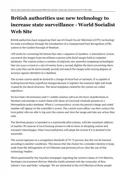
-
Brookes, Joseph. “Facial recognition is real life. And real life is difficult, says NEC.” Which-50, 26 Oct. 2017, which-50.com/
facial-recognition-real-life-real-life-difficult-says-nec/ . -
“Contract notice: South Wales Police Automated Facial Recognition Solution, 2017.” Contracts Finder, Notice 6281c974-6fd5-4632-ab1b-9f9ef3510b2e, 16 May 2017, www.contractsfinder.service.gov.uk/
notice/ 6281c974-6fd5-4632-ab1b-9f9ef3510b2e. -
Cooper, Goolistan. “Police investigating violence at Notting Hill Carnival want to speak with these 11 people.” My London, 2 Nov. 2016, www.mylondon.news/
news/ west-london-news/ police-investigating-violence-notting-hill-12114685. -
Corfield, Gareth. “Police deny Notting Hill Carnival face recog tech led to wrongful arrest.” The Register, 31 Aug. 2017, www.theregister.com/
offbeat/ 2017/ 08/ 31/ police-deny-notting-hill-carnival-face-recog-tech-led-to-wrongful-arrest/ 934179. -
“Face recognition police to scan Notting Hill Carnival CCTV for offenders.” ITV News, www.itv.com/
news/ 2016-08-28/ face-recognition-police-to-scan-notting-hill-carnival-cctv-for-offenders. -
“Facial recognition technology ‘fails’ at Notting Hill Carnival.” E&T (IET), 1 Sept. 2017, eandt.theiet.org/
2017/ 09/ 01/ facial-recognition-technology-fails-notting-hill-carnival. -
“Facing Up To The Future.” Asian Scientist Magazine, www.asianscientist.com/
2018/ 01/ print/ facial-recognition-biometrics/ . 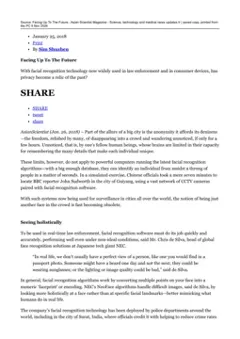
-
Fussey, Pete, and Daragh Murray. Independent Report on the London Metropolitan Police Service’s Trial of Live Facial Recognition Technology. University of Essex Human Rights Centre, July 2019, repository.essex.ac.uk/
24946/ . 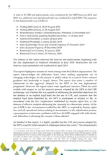
-
Fussey, Pete, et al. “‘Assisted’ facial recognition and the reinvention of suspicion and discretion in digital policing.” British Journal of Criminology, vol. 61, no. 2, 2021, pp. 325-44, https:/
/ doi.org/ 10.1093/ bjc/ azaa068. 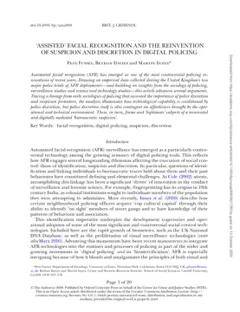
-
Gates, Kelly. The Past Perfect Promise of Facial Recognition Technology. ACDIS, UIUC, 2004.
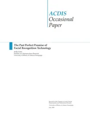
Printed copy at the talk
-
“G-Cloud listing: NEC NeoFace Facial Recognition Solution.” Digital Marketplace, www.applytosupply.digitalmarketplace.service.gov.uk/
g-cloud/ services/ 269734654369580. Accessed 9 Nov. 2026. 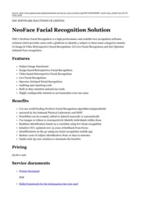
-
Graham, Stephen, and David Wood. “Digitizing Surveillance: Categorization, Space, Inequality.” Critical Social Policy, vol. 23, no. 2, 2003, pp. 227-48, https:/
/ doi.org/ 10.1177/ 0261018303023002006. 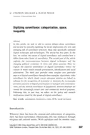
-
Hale, Benjamin. “Identity crisis: Face recognition technology and freedom of the will.” Ethics, Place & Environment, vol. 8, no. 2, 2005, pp. 141-58, https:/
/ doi.org/ 10.1080/ 13668790500237047. 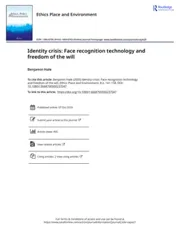
-
Hill, Rebecca. “For goodness sake, stop the plod using facial recog, London mayor told.” The Register, 17 Nov. 2017, www.theregister.com/
security/ 2017/ 11/ 17/ for-goodness-sake-stop-the-plod-using-facial-recog-london-mayor-told/ 641245. -
Hill, Rebecca. “London cops urged to scrap use of ‘biased’ facial recognition at Notting Hill Carnival.” The Register, 17 Aug. 2017, www.theregister.com/
offbeat/ 2017/ 08/ 17/ london-cops-urged-to-scrap-use-of-biased-facial-recognition-at-notting-hill-carnival/ 1029714. -
“Hitoshi Imaoka - A driving force behind world-leading facial recognition performance.” NEC, web.archive.org/
web/ 20170513052829/ http:/ / www.nec.com/ en/ global/ innovators/ h_imaoka/ 01.html. 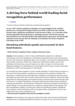
-
Home Office. “CAID L3 3rd party support to include facial recognition software.” Contracts Finder, Notice 74ad8f95-bd6c-4e6c-8eaf-439262990dd4, 6 Dec. 2016, www.contractsfinder.service.gov.uk/
notice/ 74ad8f95-bd6c-4e6c-8eaf-439262990dd4. -
“How NEC sees facial recognition playing out in personalisation.” CMO Australia, www.cmo.com.au/
article/ 629892/ how-nec-sees-facial-recognition-playing-personalisation/ . 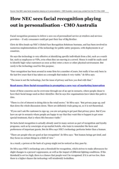
-
Imaoka, Hitoshi, et al. “The future of biometrics technology: from face recognition to related applications.” APSIPA Transactions on Signal and Information Processing, vol. 10, 2021, article e9, https:/
/ doi.org/ 10.1017/ ATSIP.2021.8. 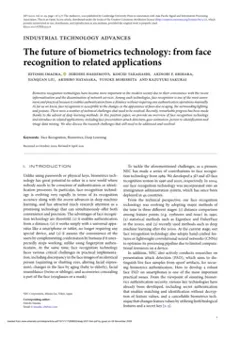
PDF, 1.1 MBOpens doi.orgCC BY 4.0
-
Introna, Lucas D., and David Wood. “Picturing Algorithmic Surveillance: The Politics of Facial Recognition Systems.” Surveillance & Society, vol. 2, no. 2/
3, 2004, pp. 177-98, https:/ / doi.org/ 10.24908/ ss.v2i2/ 3.3373. 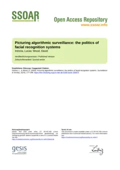
-
Martin, Alexander J. “Notting Hill Carnival spycams: Met Police rolls out real-time live face-spotting tech.” The Register, 26 Aug. 2016, www.theregister.com/
offbeat/ 2016/ 08/ 26/ notting-hill-carnival-spycams-met-police-rolls-out-real-time-live-face-spotting-tech/ 1002311. 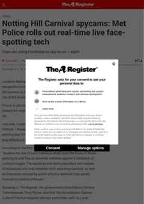
-
Matthews, Jenny. Nottinghill Carnival 2016 . Warning sign saying ‘Police camera operation’. Alamy, 29 Aug. 2016, www.alamy.com/
stock-photo-nottinghill-carnival-2016-warning-sign-saying-police-camera-operation-116526605.html. -
McCarthy, Kieren. “Biometrics watchdog breaks cover, slams UK cops over facial recog.” The Register, 24 Aug. 2017, www.theregister.com/
security/ 2017/ 08/ 24/ biometrics-watchdog-breaks-cover-slams-uk-cops-over-facial-recog/ 1530276. -
Meek, James. “Towns secretly testing ‘spy’ software.” The Guardian, 13 June 2002, nettime.org/
Lists-Archives/ nettime-l-0206/ msg00097.html. Reposted to the nettime-l mailing list. 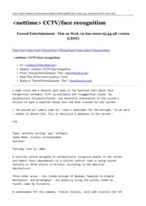
-
“Metropolitan Police: all AFR statistics and cost up to July 2018.” Big Brother Watch, Freedom of Information request ref. no. 2018080000612, Metropolitan Police Service, 20 Dec. 2018, www.bigbrotherwatch.org.uk/
wp-content/ uploads/ 2019/ 02/ Metropolitan-Police-All-AFR-statistics-and-cost-up-to-July-2018.pdf. 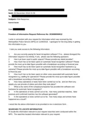
-
MPS LFR DEPLOYMENTS 2023 - 31/
12/ . Metropolitan Police Service, www.met.police.uk/2024 SysSiteAssets/ media/ downloads/ force-content/ met/ advice/ lfr/ deployment-records/ lfr-deployment-grid-2023-to-2024.pdf#page=10. Opens met.police.uk (PDF)Entry on p. 10
-
MPS LFR DEPLOYMENTS 2025. Metropolitan Police Service, www.met.police.uk/
SysSiteAssets/ media/ downloads/ force-content/ met/ advice/ lfr/ deployment-records/ live-facial-recognition-deployment-record-2025.pdf#page=3. Opens met.police.uk (PDF)Entry on p. 3
-
National Physical Laboratory and Metropolitan Police Service. Metropolitan Police Service Live Facial Recognition Trials (NPL report, Feb 2020). Metropolitan Police Service, Feb. 2020, www.met.police.uk/
syssiteassets/ media/ downloads/ central/ services/ accessing-information/ facial-recognition/ met-evaluation-report.pdf. 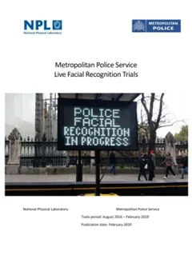
PDF, 3.1 MBOpens met.police.uk (PDF, 3.1 MB)Fig. 1, p. 9Fig. 2, p. 10Fig. 3, p. 13Fig. 4, p. 30Fig. 5, p. 31
-
NEC NeoFace Reveal brochure. NEC.
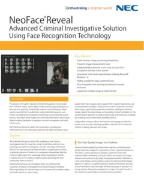
-
NEC NeoFace Watch flyer. NEC.
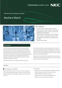
-
“NEC Software Solutions UK Limited: supplier page (Government Commercial Agency).” Government Commercial Agency, www.gca.gov.uk/
suppliers/ 63/ nec-software-solutions-uk-limited. Accessed 9 Nov. 2026. -
“NEC technology knows where you are looking.” NEC, NEC Corporation, 16 Dec. 2016, www.nec.com/
en/ press/ 201612/ global_20161216_01.html. -
“NEC welcomes greater industry collaboration on facial recognition technology.” NEC, NEC Corporation, 19 Dec. 2018, www.nec.com/
en/ press/ 201812/ global_20181219_03.html. -
NEC white paper, It’s All About The Face. NEC.
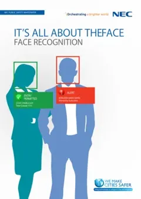
-
“NeoFace Reveal: Reduce Investigation Time.” NEC, www.nec.com/
en/ global/ solutions/ safety/ face_recognition/ NeoFaceReveal.html. -
“NeoFace Suite of tools.” NEC Face Recognition, NEC Corporation of America, web.archive.org/
web/ 20160820193816/ https:/ / www.necam.com/ biometrics/ doc.cfm?t=facerecognition. -
“NeoFace Watch: Surveillance Enhanced.” NEC, www.nec.com/
en/ global/ solutions/ safety/ face_recognition/ NeoFaceWatch.html. 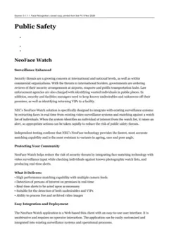
-
Norris, Clive. “From personal to digital: CCTV, the panopticon, and the technological mediation of suspicion and social control.” Surveillance as Social Sorting: Privacy, Risk and Digital Discrimination, edited by David Lyon, Routledge, 2003, pp. 249-81, doi.org/
10.4324/ 9780203994887. -
“Notting Hill Carnival 2016: Thousands descend on festival as police vow crime crackdown.” London Evening Standard, 28 Aug. 2016, www.standard.co.uk/
news/ london/ notting-hill-carnival-2016-police-vow-crackdown-on-crime-as-thousands-set-to-descend-on-festival-a3331286.html. -
“Notting Hill Carnival: Police officers ‘dread’ the event.” BBC News, 30 Aug. 2016, www.bbc.co.uk/
news/ uk-england-london-37212493. -
“Public Safety: NeoFace Watch real-time face recognition.” NEC, uk.nec.com/
en_GB/ global/ solutions/ safety/ . 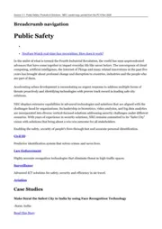
-
Purshouse, Joe, and Liz Campbell. “Privacy, crime control and police use of automated facial recognition technology.” Criminal Law Review, no. 3, 2019, pp. 188-204, ueaeprints.uea.ac.uk/
id/ eprint/ 69577/ . 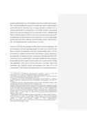
-
“Rain fails to stop Notting Hill Carnival kicking off in style with colourful street party.” The Sun, www.thesun.co.uk/
news/ 1686893/ rain-fails-to-stop-notting-hill-carnival-kicking-off-in-style-with-colourful-street-party/ . -
Sato, Atsushi, et al. “Advances in Face Detection and Recognition Technologies.” NEC Journal of Advanced Technology, vol. 2, no. 1, 2005, pp. 28-34.
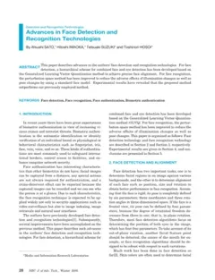
-
Senger, Nancy. “We’re Watching (Out For) You.” Business Solutions, 1 Sept. 1999, www.varinsights.com/
doc/ were-watching-out-for-you-0002. 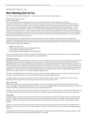
-
Straw, Jack. “Surveillance Systems.” Written answer to Norman Baker (MP for Lewes). Hansard, House of Commons Debates, vol. 318, col. 495W, 3 Nov. 1998, api.parliament.uk/
historic-hansard/ written-answers/ 1998/ nov/ 03/ surveillance-systems. -
“Surveillance: Public Safety.” NEC, uk.nec.com/
en_GB/ global/ solutions/ safety/ surveillance/ index.html. -
“UK biometric commissioner slams police for face recognition at carnival.” Identity Week, 24 Aug. 2017, identityweek.net/
uk-biometric-commissioner-slams-police-for-face-recognition-at-carnival. -
Wiles, Paul. “Metropolitan Police’s use of Facial Recognition Technology at the Notting Hill Carnival, 2017.” GOV.UK, Biometrics Commissioner, 23 Aug. 2017, www.gov.uk/
government/ news/ metropolitan-polices-use-of-facial-recognition-technology-at-the-notting-hill-carnival-2017. 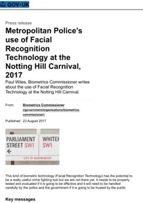
PDF, 172.3 KBOpens gov.ukOpen Government Licence v3.0
-
Wilson, Cherry. “Is the fun being sucked out of Notting Hill Carnival?” BBC News, 25 Aug. 2017, www.bbc.co.uk/
news/ uk-41023844.